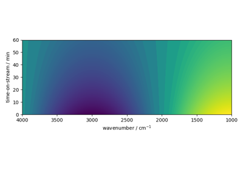

How to use NDDataset¶
Example of how to create and manipulate NDDataset in SpectroChemPy



NDDataset creation and plotting example
NDDataset creation and plotting example
Note
You are reading the documentation related to the development version. Go here if you are looking for the documentation of the last release.
Example of how to create and manipulate NDDataset in SpectroChemPy
NDDataset creation and plotting example